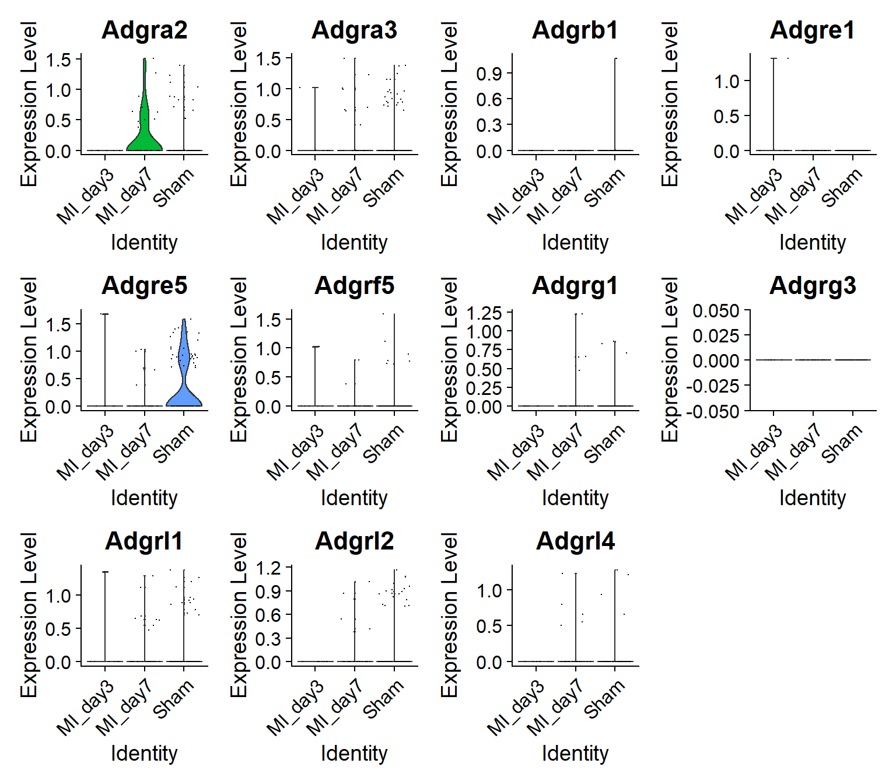
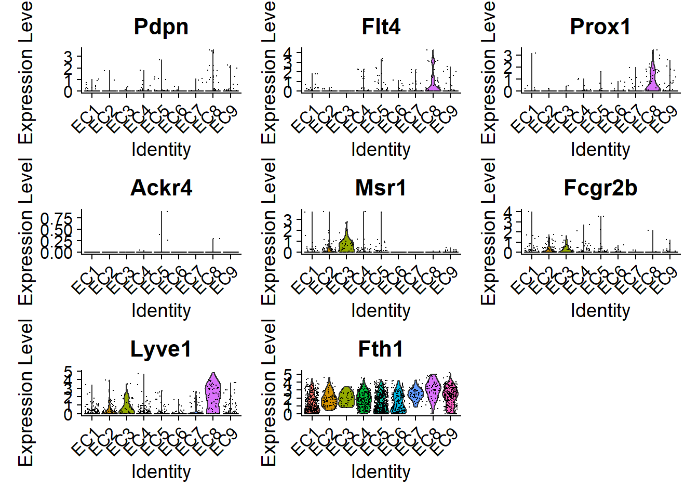
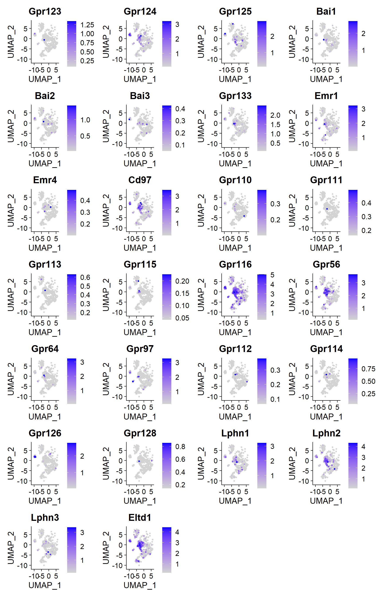
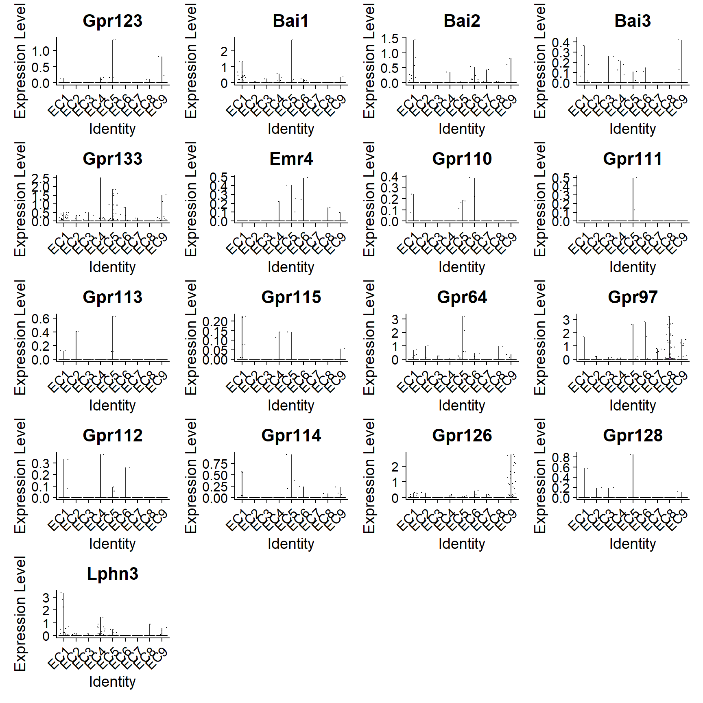
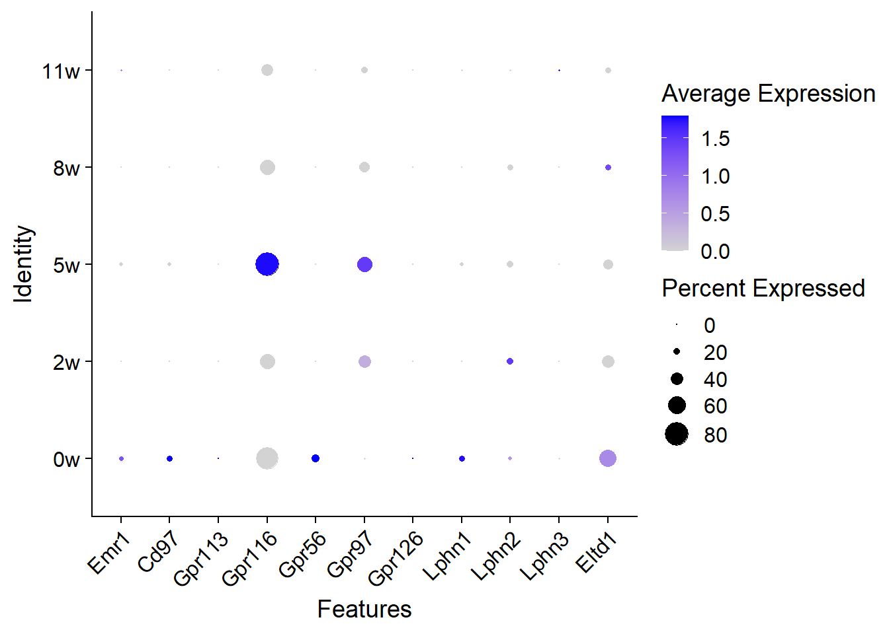
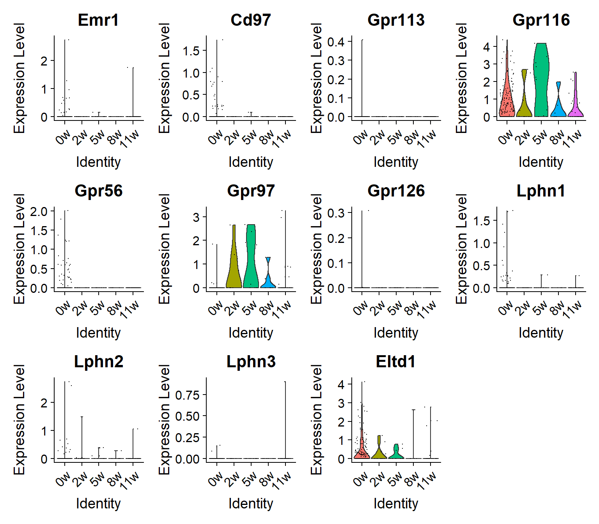
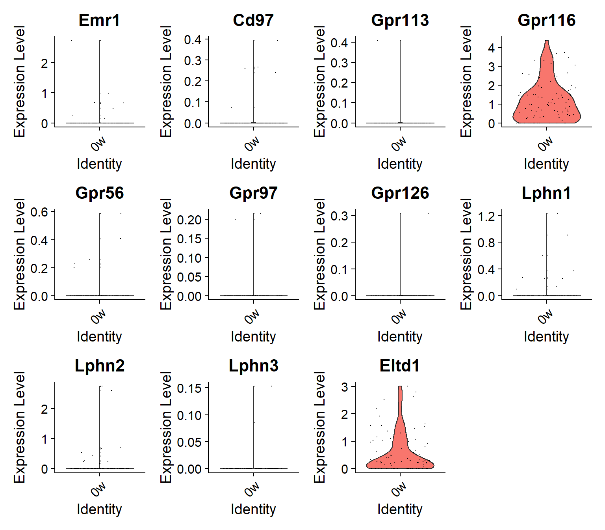
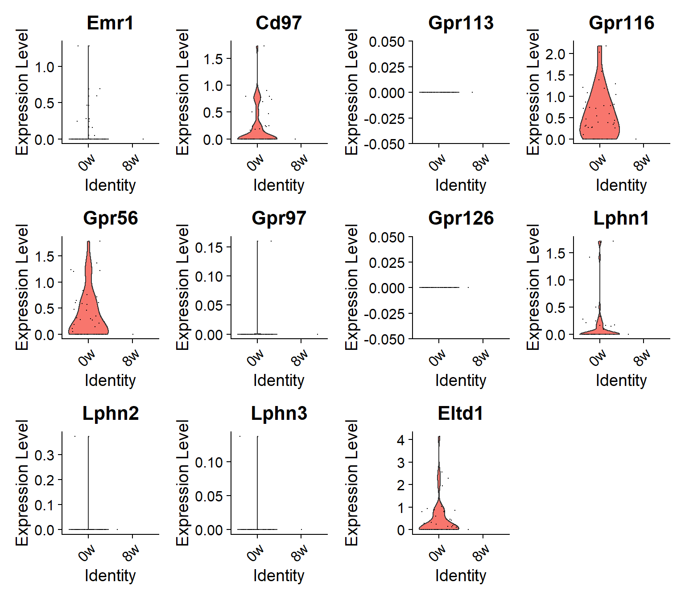
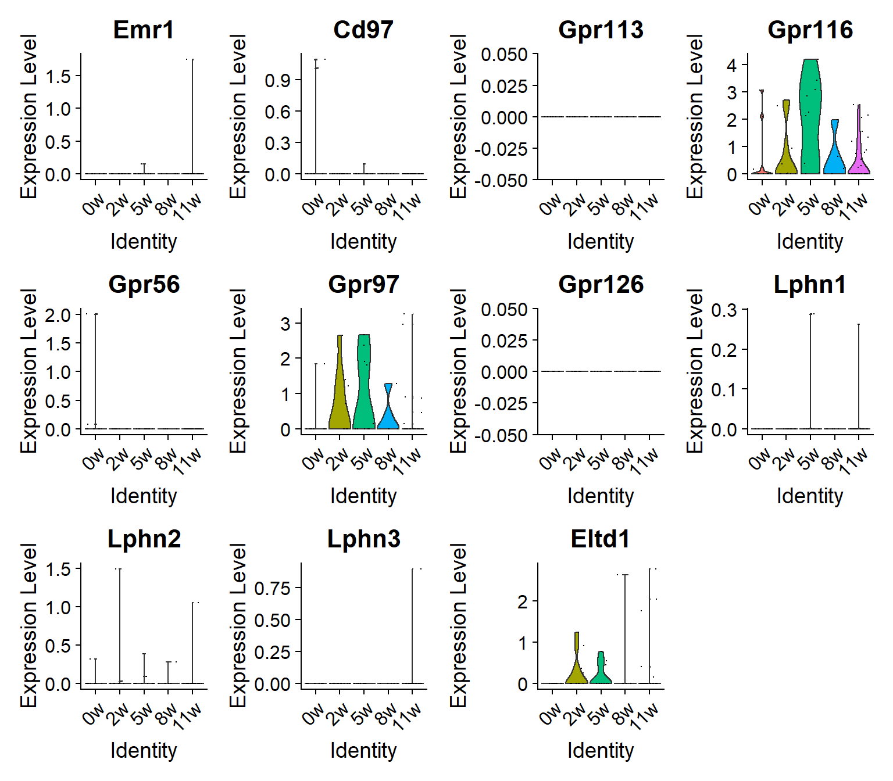

library(dplyr)
library(Seurat)
library(ggplot2)ADGRs in lymphatic endothelial cells in scRNA-seq datasets
Dataset1: postMI mice heart
Identification of LEC
The paper did not include cell type information in the dataset, so we will use established markers to define endothelial cells (EC) and lymphatic endothelial cells (LEC).
EC markers used include: Pecam1, Icam2, Cdh5 (code or image to be added)
#dependencies Based on the plot, we’ll define cluster 2, 7, 9, 12, 15, 18, 19 as EC.
Among them, we’ll use LEC lineage markers to identify possible LEC populations. Markers used include: Pdpn, Flt4, Prox1, Ackr4, Msr1, Fcgr2b, Lyve1, Fth1
load("../data/healthy MI non myocyte cardiac/clean/MI_EC_orig_ident.rdata")
##this is EC subset without changing idents to "sample"!
VlnPlot(TIP_MI_EC,
features = c("Pdpn","Flt4","Prox1","Ackr4","Msr1","Fcgr2b",
"Lyve1", "Fth1"),
pt.size = 0.1)
DotPlot(TIP_MI_EC,
features = c("Pdpn","Flt4","Prox1","Ackr4","Msr1","Fcgr2b",
"Lyve1"),
col.min = 0, col.max = 3,
dot.min = 0, dot.scale = 6)+
theme(axis.text.x = element_text(angle = 45, vjust = 1, hjust=1))
*note that Fth1 is not shown in the dot plot to visualize the less expressed markers.
It looks like the cluster 9 and 15 are likely to be LEC. Firstly, we’ll plot all the ADGRs (33 in total) in EC to put it in perspective. (When all cells show same value of expression for a gene, it usually means the gene is minimally expressed, and therefore with scaling the values become quite indistinguishable. )
ADGR_list <- c("Adgra1", "Adgra2","Adgra3", "Adgrb1","Adgrb2", "Adgrb3", "Adgrc3","Adgrc1", "Adgrc2", "Adgrd1", "Adgrd2", "Adgre1", "Adgre2", "Adgre3", "Adgre4", "Adgre5", "Adgrf1", "Adgrf2", "Adgrf3", "Adgrf4","Adgrf5","Adgrg1","Adgrg2","Adgrg3", "Adgrg4", "Adgrg5", "Adgrg6", "Adgrg7","Adgrl1", "Adgrl2", "Adgrl3", "Adgrl4", "Adgrv1")
FeaturePlot(TIP_MI_EC,
reduction = "tsne",
features= ADGR_list,
sort.cell = TRUE,
min.cutoff = 'q10',
label = TRUE) 
Other than the 11 undetectable ADGRs, several ADGRs show very low expression level (in few cells) in the plot above. We’ll narrow the list down (Adgra2, Adgra3, Adgrb1, Adgre1, Adgre5, Adgrf5, Adgrg1, Adgrg3, Adgrl1, Adgrl2, Adgrl4) and look further below.
VlnPlot(TIP_MI_EC,
features= c("Adgra2", "Adgra3", "Adgrb1",
"Adgre1", "Adgre5", "Adgrf5",
"Adgrg1", "Adgrg3","Adgrl1",
"Adgrl2", "Adgrl4"))
Adgrb1 barely shows up in the violin plot and could be excluded from further examination, but we are keeping it for its (very low) expression in cluster 15 (LEC).
ADGRs expression in LEC (sham vs MI)
Now we can zoom in to the LEC clusters and look at the ADGRs expression profile among different conditions.
load("../data/healthy MI non myocyte cardiac/clean/MI_LEC_normalized.rdata")
DotPlot(TIP_MI_LEC,
features = c("Adgra2", "Adgra3",
"Adgre1", "Adgre5", "Adgrf5",
"Adgrg1", "Adgrg3", "Adgrl1",
"Adgrl2", "Adgrl4"),
col.min = 0, col.max = 3,
dot.min = 0, dot.scale = 6)+
theme(axis.text.x = element_text(angle = 45, vjust = 1, hjust=1))
VlnPlot(TIP_MI_LEC,
features = c("Adgra2", "Adgra3",
"Adgre1", "Adgre5", "Adgrf5",
"Adgrg1", "Adgrg3", "Adgrl1",
"Adgrl2", "Adgrl4"),
pt.size=0.1)
Taking one step further, we are now looking at the individual LEC cluster separately (note the legend order is different):
VlnPlot(TIP_MI_EC, features =c("Adgra2", "Adgra3","Adgrb1",
"Adgre1", "Adgre5", "Adgrf5",
"Adgrg1", "Adgrg3", "Adgrl1",
"Adgrl2", "Adgrl4"),
idents = 9,
group.by = "sample", #split.by doesn't show legend with multiple features
pt.size=0.1)
VlnPlot(TIP_MI_EC, features =c("Adgra2", "Adgra3","Adgrb1",
"Adgre1", "Adgre5", "Adgrf5",
"Adgrg1", "Adgrg3", "Adgrl1",
"Adgrl2", "Adgrl4"),
idents = 15,
group.by = "sample",
pt.size=0.1)
##Dataset2: postTAC mouse heart
###Identification of LEC clusters
This dataset contains cell type information, which includes 9 clusters of EC. Here we will use the same LEC markers as before to identify the possible LEC clusters among them.
load("../data/GSE120064_TAC CM_NMCC_mtx_cell_info/clean/TAC_EC_umap.rdata")
VlnPlot(EC, features = c("Pdpn","Flt4","Prox1","Ackr4","Msr1","Fcgr2b",
"Lyve1", "Fth1"),
pt.size = 0.1)
We will include cluster 2, 3 and 8 as LEC and examine the ADGRs in them.
ADGRs expression in LEC
Again, we’ll plot ADGRs in all EC clusters to keep things in perspective.
ADGR_list_oldname <- c("Gpr123", "Gpr124", "Gpr125",
"Bai1", "Bai2", "Bai3",
"Cselr1", "Cselr2", "Cselr3",
"Gpr133", "Gpr144",
"Emr1", "Emr2", "Emr3", "Emr4", "Cd97",
'Gpr110', "Gpr111", "Gpr113", "Gpr115", "Gpr116",
"Gpr56", "Gpr64", "Gpr97", "Gpr112", "Gpr114", 'Gpr126', "Gpr128",
'Lphn1', 'Lphn2', 'Lphn3', "Eltd1", "Vlgr1")
FeaturePlot(EC,
reduction = "umap",
features= ADGR_list_oldname,
sort.cell = TRUE,
min.cutoff = 'q10') 
The undetectable ADGRs are left out from the plot above. Sub-clusters labels are not shown for better visualization of the expression levels. For the ones with relatively higher expression (Gpr124, GPr125, Emr1, Cd97, Gpr116, Gpr56, Lphn1, Lphn2 and Eltd1), we’ll include them for further examination. For the other ones with sporadic expression, we will use violin plot to check the expression levels in different subclusters more directly.
VlnPlot(EC, features = c("Gpr123", "Bai1", "Bai2",
"Bai3", "Gpr133", "Emr4", "Gpr110",
"Gpr111", "Gpr113", "Gpr115", "Gpr64",
'Gpr97', 'Gpr112', 'Gpr114', "Gpr126", "Gpr128", 'Lphn3'))
We’ll include those with >0.5 relative expression levels (arbitrary) in LEC clusters: Gpr113, Gpr97, Gpr126, Lphn3.
After narrowing down the list, we can now visualize expression levels of these ADGRs in different conditions.
load("../data/GSE120064_TAC CM_NMCC_mtx_cell_info/clean/TAC_LEC_metadata.rdata")
DotPlot(TAC_LEC,
features = c("Emr1", "Cd97",
"Gpr113", "Gpr116",
"Gpr56", "Gpr97", 'Gpr126',
'Lphn1', 'Lphn2', 'Lphn3', "Eltd1"),
col.min = 0, col.max = 3,
dot.min = 0, dot.scale = 6)+
theme(axis.text.x = element_text(angle = 45, vjust = 1, hjust=1))
VlnPlot(TAC_LEC,
features = c("Emr1", "Cd97",
"Gpr113", "Gpr116",
"Gpr56", "Gpr97", 'Gpr126',
'Lphn1', 'Lphn2', 'Lphn3', "Eltd1"),
pt.size=0.1)
Lastly, we’ll look at individual LEC cluster to explore possible pattern.
metadata_lec <- TAC_LEC@meta.data
Idents(TAC_LEC) <- metadata_lec$SubCluster
VlnPlot(TAC_LEC,
features = c("Emr1", "Cd97",
"Gpr113", "Gpr116",
"Gpr56", "Gpr97", 'Gpr126',
'Lphn1', 'Lphn2', 'Lphn3', "Eltd1"),
idents = "EC2",
group.by = "condition")
VlnPlot(TAC_LEC,
features = c("Emr1", "Cd97",
"Gpr113", "Gpr116",
"Gpr56", "Gpr97", 'Gpr126',
'Lphn1', 'Lphn2', 'Lphn3', "Eltd1"),
idents = "EC3",
group.by = "condition")
Interestingly, both EC2 and EC3 show detectable expression only at baseline (0w) for the ADGRs examined, while EC8 cells express several ADGRs in all 5 different conditions.
load("../data/GSE120064_TAC CM_NMCC_mtx_cell_info/clean/TAC_LEC_cluster8_condition.rdata")
VlnPlot(TAC_LEC8,
features = c("Emr1", "Cd97",
"Gpr113", "Gpr116",
"Gpr56", "Gpr97", 'Gpr126',
'Lphn1', 'Lphn2', 'Lphn3', "Eltd1"))